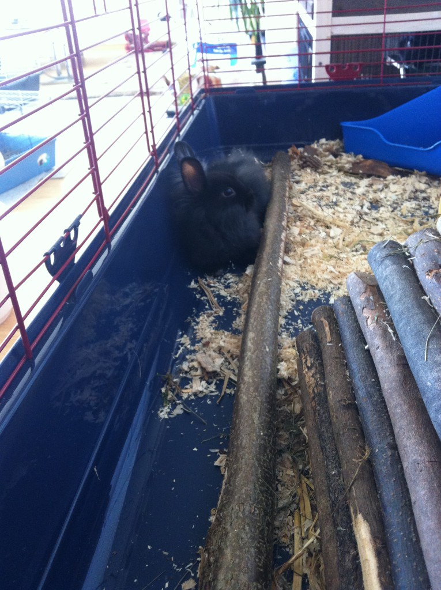

Nem kis változással jár az élet a nyuszikkal. Ebben a kis munkában inkább a benti társállattartás lesz bemutatva, tekintsünk el attól milyen az, ha valaki a kertben egy ketrecben tartja őket.
Hazahozzuk a nyuszit

Készüljünk fel a jövevény érkezésére. Szükség van:
minimum 100 x 50 cm-es ketrecre. Ezt olyan helyre tegyük, ami nem túl zajos, huzatos, és ne legyen túl meleg helyen sem.
önitatóra Kezdetben figyeljük, tud e már belőle inni. Ezt általában is ajánlatos figyelni, mert néha nehezen jön belőle a víz, vagy esetleg nagyon folyik és minden tiszta víz lesz. Érdemes néha ‒ pl. ha beteg ‒ tálból is kínálni, de ne hagyjuk a ketrecében, mert beleléphet, fel is boríthatja.
műanyag / kerámia tálra az etetéshez
szénatartóra Ezt olyan helyre szereljük majd, hogy a nyuszi wc-zés közben is elérje, mert akármilyen hihetetlen, a legtöbb nyuszi szeret bogyózni szénalegelészés közben. Így nekünk is kevesebbet kell takarítani.
A szénatartót sok nyuszi viszont nem annyira szereti, mert nehezen tudja belőle kikaparni a szénát. Így van ez olyankor is, ha beteg a nyuszi. Ilyenkor könnyíthetünk a dolgán és a wc-től a legtávolabbi helyre is letehetjük a szénát a ketrec aljára. Ne tegyünk le túl sokat egyszerre neki, inkább sűrűbben adjuk és ellenőrizzük, hogy nem szennyeződött-e. Ha igen, ezt távolítsuk el.
alomtálra Ez lehet sarok toalett, vagy olyan, amilyet a cicák is használnak. Az alomtálba tegyünk pelletet (fa/szalma), vagy forgácsot. Ez utóbbi jobban szennyezi a környezetet, és ha fontos a sterilitás műtét vagy akár sérülés után, egyáltalán nem is ajánlott.
Fontos, hogy ne macskaalmot használjunk, főleg ne csomósodót!
játékokra Tehetünk be szalmalabdát játszani, hogy ne unatkozzon!
alagútra, polcra azért, hogy el tudjon bújni, esetleg heverészni tudjon rajta.
Nyuszik vs. WC
A nyulak szobatisztaságra nevelhetőek. Figyeljük meg az első napokban, melyik sarokba ürít, és oda tegyük az alomtálcát. Addig tehát ne engedjük ki a ketrecből, amíg nem választja ki ezt az ominózus helyet.
Pelletet csak a toalettbe tegyünk, ne az egész ketrecbe. Nekünk is könnyebb lesz takarítani. A ketrec aljába viszont tehetünk rágcsálószőnyeget, vagy plédet, ha nem szeretnénk, hogy folyton a műanyagon legyen.
Az alomtálat akkor érdemes kitakarítani, ha látjuk, hogy az alom nedves. (Ez lehet naponta többször, de akár kétnaponta is.) Függ a toalett méretétől és a nyuszitól.
A szobatisztaság főként a pisire vonatkozik. Bogyókat potyogtathat el ezután is a lakásban, ha szabadon bóklászhat. (Ez nem törvényszerű.)
Ivaréréskor pedig a hormonok miatt elkezdhet jelölő pisizni, vagy egy másik nyuszi megjelenésekor jelölő kakizni is akár.
Kulcsszó mindenképpen a TÜRELEM!
Nyuszik az otthonunkban
Szeretik a szabadságot, mászkálni, jönni-menni, sokan tévesen gondolják azt, hogy ketrecben a helyük, ők is élhetnek teljesen szabadon tartva a lakásban, ehhez csak megfelelően nyuszi biztossá kell varázsolni a lakást, virágokat eltenni, kábeleket biztonságosan elrejteni, vagy kábel védő műanyagba behúzni őket.
Ha már még is bezárva tartjuk nyuszinkat, próbáljuk meg a lehető legtöbbet szabadon hagyni létezni. Megnövelhetjük a biztonságok életterüket különböző praktikákkal is.
Engedjük ki, amikor tehetjük, emiatt érdemes:
a tapétát, ajtófélfákat védeni (pl. kartonnal),
vezetékeket, kábeleket, mobiltöltőket elfedni,
a növényeket is olyan helyre tenni, ahol nem tudják lelegelni! Főként a mérgező növényekkel vigyázzunk!
Ne hagyjunk méreganyagokat (tisztítószerek, mérgek, permetek) elérhető helyen!
A ketrec tetejére is érdemes tenni plédet vagy törölközőt, ha szeret rá felmászkálni. (Így biztos nem akad bele a lába, ha hirtelen leugrik róla. Ebből származtak már csúnya balesetek.)
Mivel este aktív, ne a hálónkban legyen a végleges helye, mert kaparhat, rohangálhat éjjel
Hogy szabad a nyuszit megfogni?
A legtöbb nyuszi nagyon nem szereti, ha felvesszük, de ez olykor elkerülhetetlen.
Megemelhetjük a hátán lévő irhánál fogva. Ilyenkor gyorsan tegyük a popója alá a kezünket, ne lógassuk saját súlyánál fogva a levegőbe!Megemelhetjük úgy is, hogy a mellső lábak alá nyúlunk be, és utána a popó alá.
Vannak olyanok, akik nagyon rúgkapálnak, karmolnak közben!!! Fontos, hogy ne ejtsük le ilyenkor sem!
Illetve mindig a feje legyen feljebb, ez főleg egy beteg nyuszinál fontos.